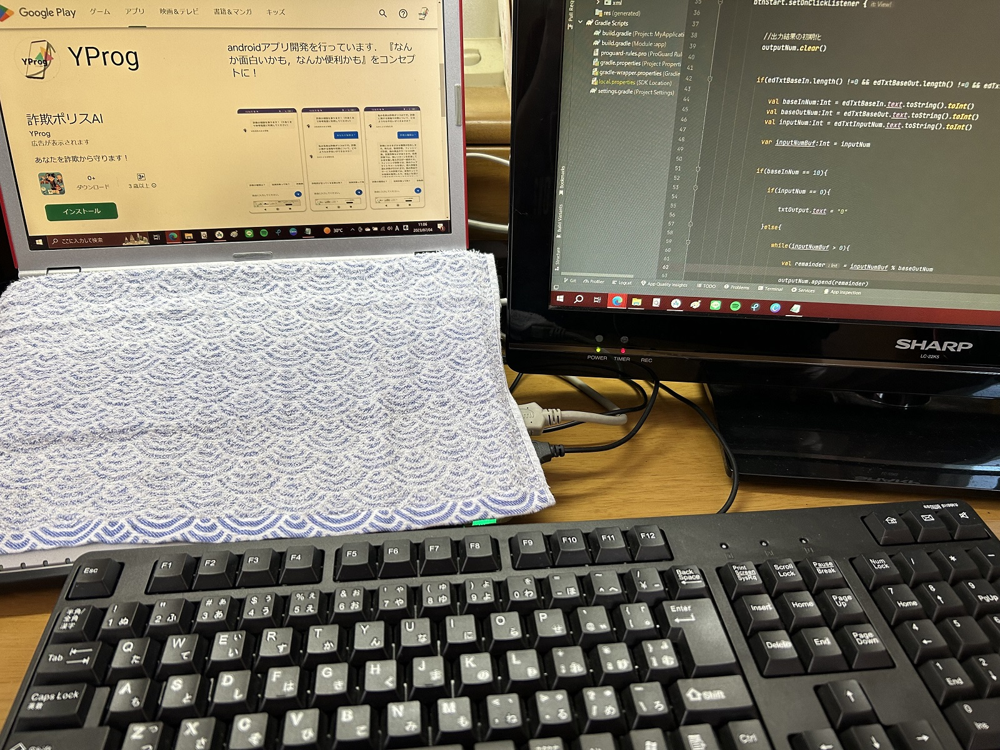

プロフィール
YProgとは？
本サイト運営者のYProgです。
『なんか面白いかも、なんか便利かも』をコンセプトに、Androidアプリの開発を行っています。
また、ITに関する資格取得に向けて、日々勉強しています。
YouTubeにアプリの紹介動画を公開しています。
下の「YProg」アイコンをクリックすると，すぐに動画を確認することが出来ます。また，「YouTube」ボタンをクリックすると，チャンネル登録が出来ます。
本ホームページの紹介動画
以下の動画にて，本ホームページの紹介を行っています。
「こんなアプリが合ったらいいのにな...」などの意見がありましたら，YouTubeのコメント欄または本ホームページのお問い合わせフォームまで送って頂けると幸いです。
もしかしたら，あなたの意見がアプリになるかも！？
アプリ開発にいたる経緯
大学を卒業して、就職したものの業務についていくことができず、わずか1か月で退社しました。
自宅にあったAndroidスマホを使って、何か役に立つものを作ることができないかと考え、アプリ開発を開始しました。
また、アプリ開発を行う上で、アルゴリズムやセキュリティに関する知識が必要と考え、IT系の資格取得に向けて勉強しています。
使用経験のある開発環境
取得した資格

最終更新日: 2023年7月5日